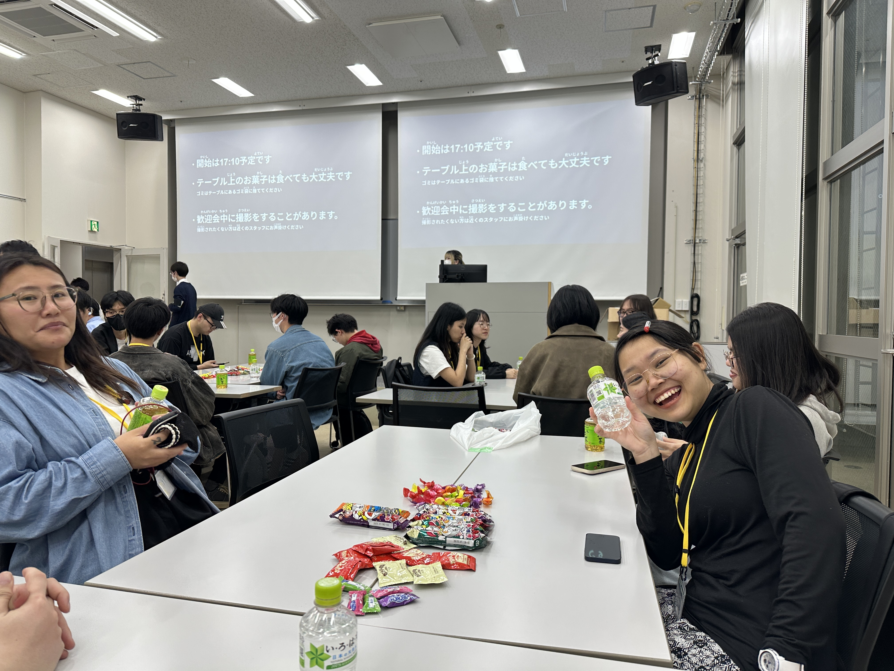
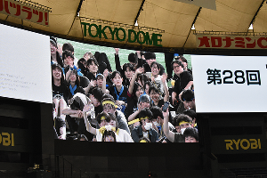
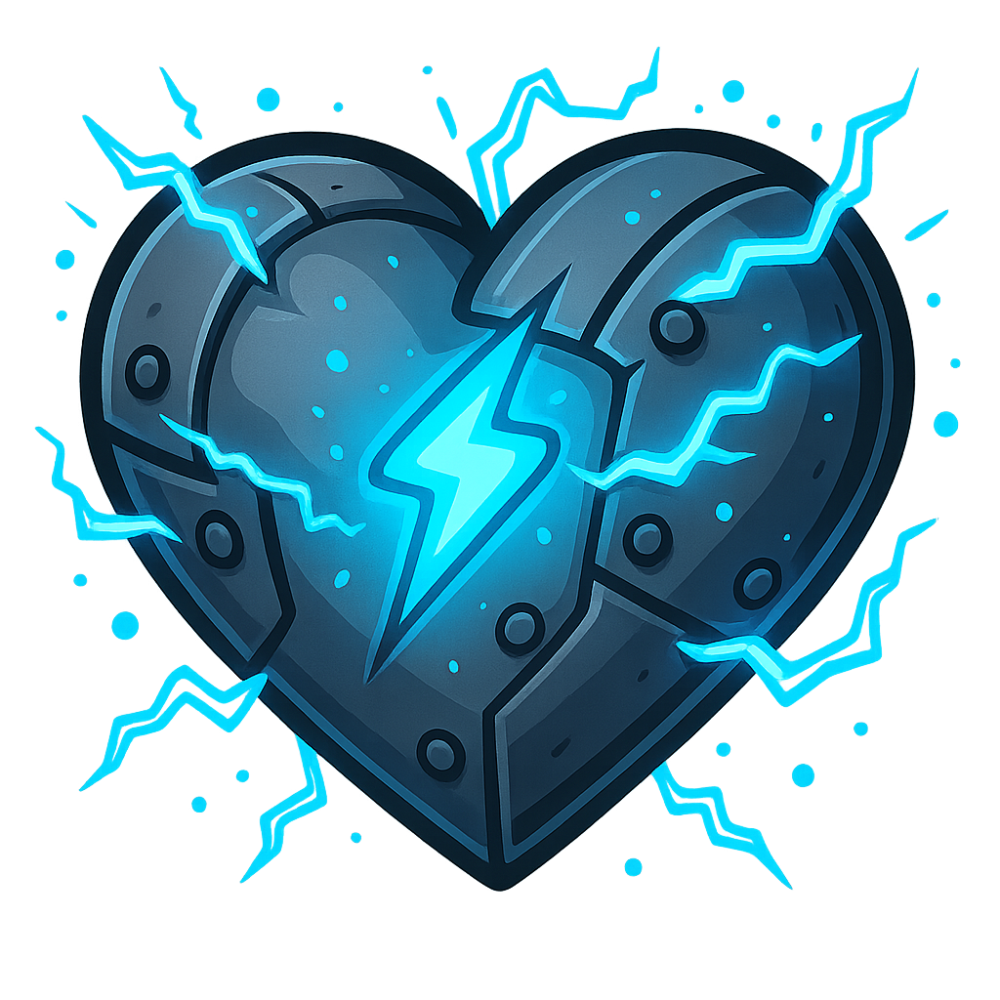
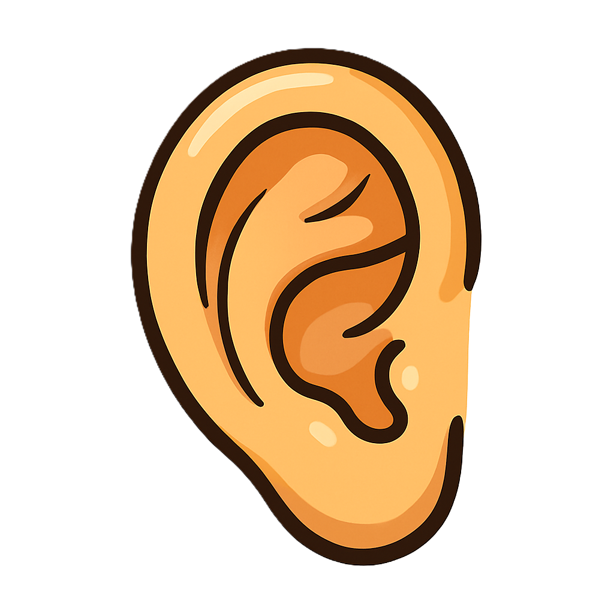
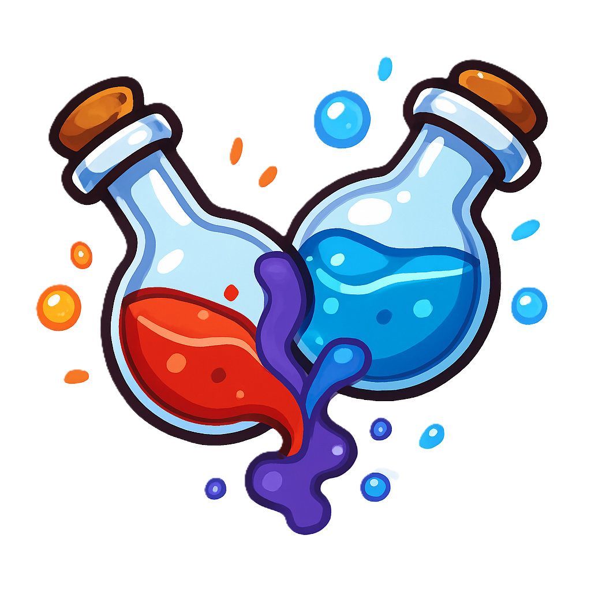
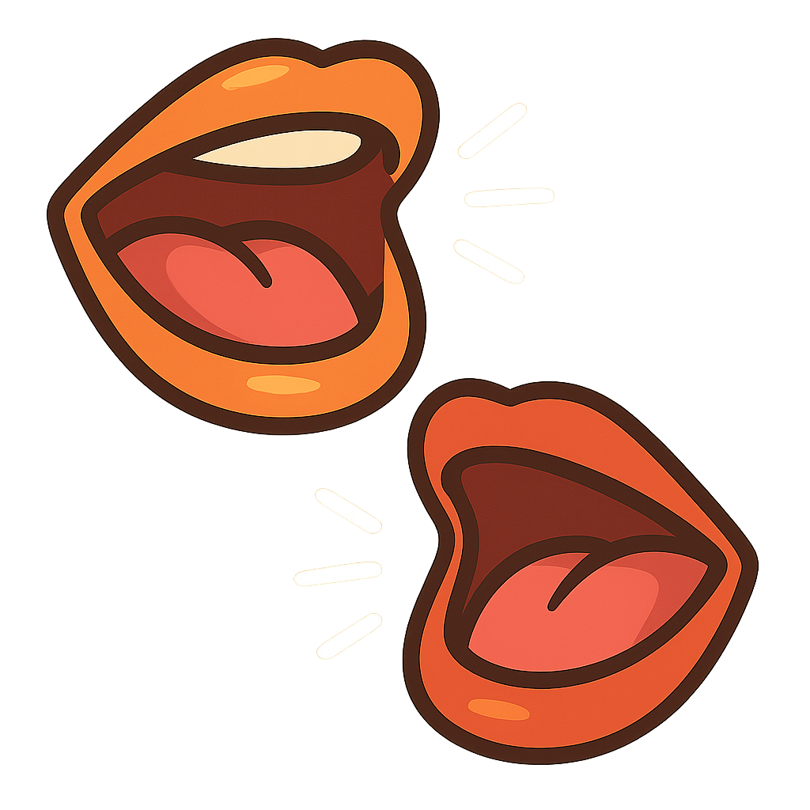
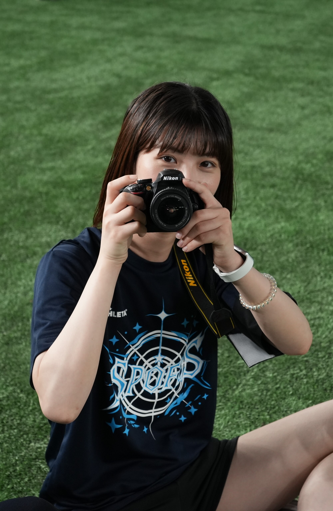
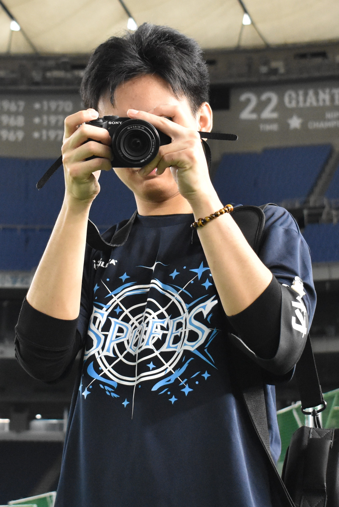
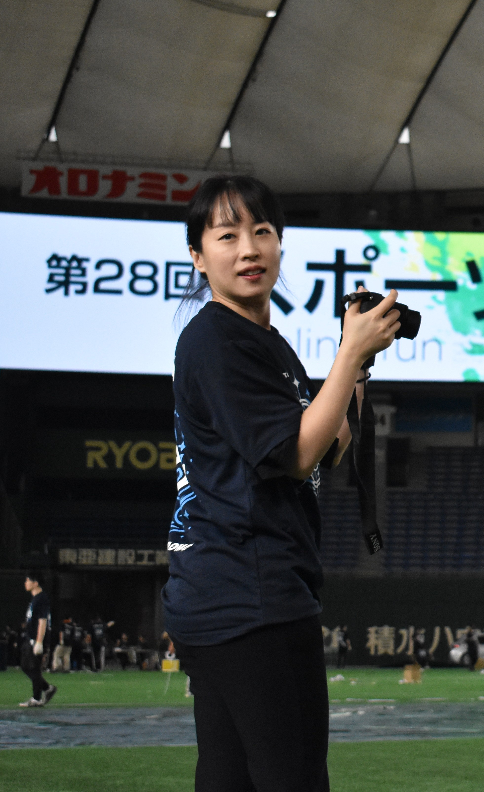

日本電子専門学校に留学してきたばかりのあなたは、
この環境にまだ慣れていないのではありませんか？
これからどんな挑戦が待ち受けているのか、
まだ分からないかもしれませんね。大丈夫！
このサイトでは、これから直面する学校生活の
あれこれや挑戦についてお伝えします！
イベント
それでは、今学期の主なイベントを紹介しましょう！
学校では留学生のために特別なイベントも用意されていますよ！
ミッション 1

Jec Week
学校が始まって最初のイベントはJec Weekです。
友達ができるし、楽な気持ちで勉強できます。
大変なところは特にありません。強いて言えば、
内向的な性格の人にとっては、ちょっと辛いかもしれません。
ミッション 2

留学生歓迎会
留学生歓迎会は留学生だけが参加できるイベントです。
主な内容は留学生同士の友達作りと、
日本の文化や伝統的なゲームの体験です。
ミッション 3

見学
今回の見学の場所は科学未来館です。
科学未来館の展示を通じて、
いいアイディアを思い浮かべるかもしれません。
とりあえず、気楽な気持ちで学びましょう！
ミッション 4

スポーツフェスティバル
一年に一回のスポーツフェスティバルの難しさはほぼ0です。
一日の中で体力、向心力、チームワーク力を
鍛えることが一番大切なことだと思います。
身に付けるスキル
では、Webデザイン科では専門的なスキル以外に、
どのようなスキルを身につけることができるのでしょうか。
特に留学生にとっては、
どのような点に注意すればよりスムーズに学習できるのでしょうか。
スキル 1

責任感
中途半端な気持ちで入学すると、1か月後には本当に大変なことになります。 授業に追いつけず、宿題も山積みで、前期課題にどう取り組めばいいのか 全く分からない状態でした。このまま負のサイクルが続き、何度も 「学校を辞めようか」と考えたほどです。もう子どもではありませんから、 責任感を持って学業に臨む必要があります。
スキル 2

傾聴力
Webデザイン科では大量のコミュニケーションが求められるため、 意見が食い違う場面も少なくありません。自分の考えを急いで口にするのではなく、 まずは相手の意見にしっかり耳を傾け、その内容を整理したうえで、 自分の意見を伝える。これこそがもっとも効果的なコミュニケーションの方法です。
スキル 3

創造力
Webデザイン科では一体どんなことを学ぶのでしょうか？端的に言えば、 0から100まで新しいものを生み出すために、創造力が何よりも重要です。 この力は学業だけでなく、人生のあらゆる場面で役立ちます。 だからこそ、まずは可能性を想像し、自らの手でカタチにしていきましょう！
スキル 4

コミュニケーション力
実はWebデザイン科に限らず、IT産業に携わる学科や職種では コミュニケーション能力が求められます。では、おしゃべりが得意でない人は どうすればよいのでしょうか？心配はいりません。まずは「自分が伝えたいこと」を はっきりさせ、それを素直に言葉にすることから始めましょう。Webデザイン科で 学び続け、実践を重ねるうちに、必ずコミュニケーション力は鍛えられますよ。
スキル 5
チームワーク力
「自分の力でグループにどう貢献するか」は、常にチームワークの課題の一つです。 特にWebデザイン科ではグループ形式で課題をこなすことが多く、 まさに日常茶飯事と言えます。だからこそ、この2年間で 自分のチームワーク力をしっかり鍛えましょう！
スキル 6
発見力と解決力
日本電子専門学校 Webデザイン科で学んで最も重要だと感じたスキルは、 企画力です。Webサイト制作において何よりも大切なのは、優れた企画書を 作成することだと思います。しかし、その企画書を形にする前提として 「問題を発見する力（問題発見力）」と「解決策を導き出す力（問題解決力）」が 不可欠です。これらのスキルを身につければ、学業だけでなく、社会人として、 そして人生全般においても大いに役立つはずです。
インタビュー
私たちは、学園祭のウェブサイト制作に参加した1年生4人にインタビューしました。
彼らは4つの異なる国から来ていて、
日本に溶け込む方法について話してもらいました。
インタビュー 1

台湾からの高さん
1. 自分の勉強方法は何ですか？検定試験や学校の小テストにはどのように対策していますか？ 特別な勉強方法はないので、B検定に落ちました。入学前に少し自学しましたが、前期のことは特に問題なかったです。後期から頑張ります。 2. 日本に留学して、どうやって友達を作っていますか？ 友達いません。 3. 先輩とは普段どのように接していますか？気をつけるべきことは何ですか？ 留学生だから、日本人の先輩より年上ですが、対応するときは「先輩」と呼んだ方がいいと思います。最初は少しおかしいかもしれませんが、時間が経つと慣れると思います。同じ国の先輩なら、別にいいです。
インタビュー 2

ミャンマーからのテッさん
1. 自分の勉強方法は何ですか？検定試験や学校の小テストにはどのように対策していますか？ 毎日時間をあげて、学んだことを全部復習することが大事だと思います。 2. 日本に留学して、どうやって友達を作っていますか？ いろんな人と会話して友達を作るように頑張っています。 3. 先輩とは普段どのように接していますか？気をつけるべきことは何ですか？ 知りたいことがあったら聞いたり、イベントとかであったら挨拶したりしています。他の時にはあまり接していないです。話す時には態度と言葉の使い方に気をつける方がいいと思います。
インタビュー 3

中国からの李さん
1. 自分の勉強方法は何ですか？検定試験や学校の小テストにはどのように対策していますか？ まずは色彩検定や前期課題、N1などの合格を目指して、頑張ります。小テストなんてどうでもいいと思います。年を取ったから、時間の使い方と体力も大事だと思います。 2. 日本に留学して、どうやって友達を作っていますか？ 積極的に話しかけます。 3. 先輩とは普段どのように接していますか？気をつけるべきことは何ですか？ 積極的に！！時々ゴシップを聞くかもしれません。
インタビュー 4

韓国からのワンさん
1. 自分の勉強方法は何ですか？検定試験や学校の小テストにはどのように対策していますか？ 落ち着いて勉強するタイプで、試験前にはもう少し時間をかけて勉強します。 2. 日本に留学して、どうやって友達を作っていますか？ 新しく出会った人にも積極的に話しかける性格なので、一緒にご飯を食べようと誘ったり、すれ違う時に元気に挨拶したりして友達を作っています。あまり焦らず、自然な流れを大切にしています。 3. 先輩とは普段どのように接していますか？気をつけるべきことは何ですか？ トイレや廊下などで軽く挨拶をします。先輩にはたくさん助けてもらったと思っているので、いつも感謝の気持ちを持って、年齢に関係なく目上の人として丁寧に接するようにしています。